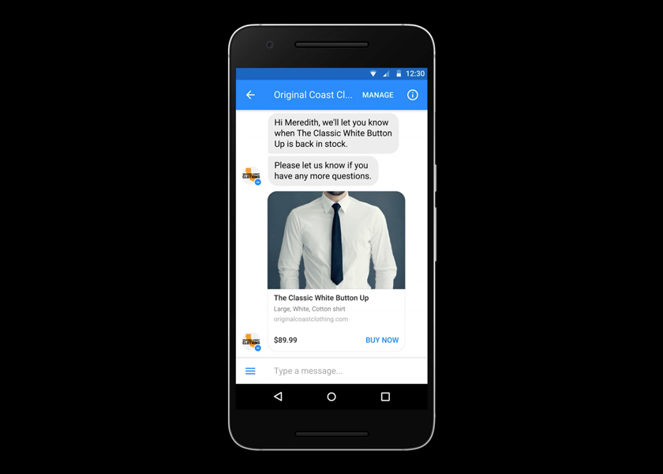

Facebook Messenger now allows payments in chatbots!


Finally, that happened. Facebook closed the most important downside in its chatbot platform. Now Chatbots can settle for payments right within the messenger without sending users to the external websites. David Marcus(Facebook’s head of Messenger) declared these days onstage at TechCrunch Disrupt SF 2016.
Now, the credit card data individuals have already got stored on Facebook or messenger can be used to instantly make purchases in bots. All that is now done in one click.
To support payments in messenger, the corporate is working with all the most important players within the trade together with Stripe, PayPal, Braintree, Visa, MasterCard and American Express.
During the talk, Marcus mentioned Messenger’s rise to one billion users because of a forced migration from Facebook’s main app, his relationship with Mark Zuckerberg, and therefore the early stumbles with chatbots that are used by millions of people across 200 countries.
Head of the Messenger announced that all types of News Feed ads would purpose to them and users will share bots they enjoy with their friends. And rather than forcing all bot interactions to happen through text, developers will now build web views into conversations to pull in interfaces from their websites. This way you'll scroll a listing of flights, consume differing types of media, or even play basic games whereas still within the chat window.
This is all a part of the messenger platform v1.2 that launched today. “Inside a thread you've got identity, transaction capabilities, the power to draw UI, and draw native buttons and interfaces,” Marcus explained. “We're bringing all these sorts of experiences together.”
He noted additionally that the web view might well be prefetched to be in no time, that one in every of several under the hood performance enhancements the app has seen in recent months to boost the startup time on mobile, and different latency problems.
All these changes can help to make Facebook Messenger bots better live up to the promise of the platform, that Marcus admitted was maybe to a small degree undercooked at launch.
“The problem was it got overhyped, very, very quickly,” he said. “The basic capabilities we provided at the time weren’t good enough to replace traditional app interfaces and experiences,” he said.
Because developers weren’t given enough time or resources to make their bots before the platform went live, several early adopters felt that bots weren’t considerably better (and sometimes were lots worse), than their mobile web or mobile app counterparts.
Marcus was asked how far ahead of the bot platform launch Facebook gave developers the ultimate details regarding what functionality would be offered. He responded, “a couple of weeks only.” once asked if that was enough time to make a high-quality bot, he admitted, “probably not.”
“It’s not easy,” said Marcus of rolling out a platform like Messenger’s bots. “It takes time. What we wanted to try and do at F8 is enable all the over 34,000 devs on the platform, whether they’re building capabilities for third-parties or actual experiences,” he said.
While some bots – like those targeted on delivering news – have done well, others have required lots of work to giving a compelling experience. But with the addition of web view and payments, something like Hipmunk’s forthcoming travel bot will do things like help travelers find and book airline tickets and hotels, as well as show itineraries right within the messenger app.
Along with the addition of the new capabilities, developers will currently be given additional guidance from Facebook on how to build prospering messenger experiences, Marcus noted.